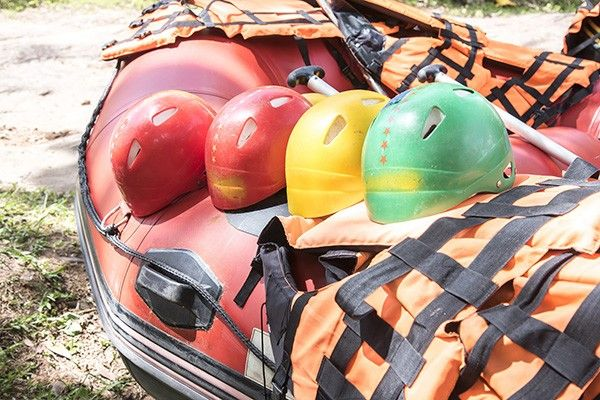

White Water Rafting

White water rafting is an exciting and adventurous outdoor recreational activity that involves navigating rivers and rapids using an inflatable raft. This thrilling experience typically takes place on whitewater—sections of a river where the water flows quickly and turbulently, creating frothy, churning waves and sudden drops.White water rafting is not only about adventure and thrills—it also offers breathtaking views of nature, including canyons, forests, and wildlife along the riverbanks. Whether you're a beginner looking for a fun outing or an experienced rafter seeking the next big rush, this activity provides a unique and unforgettable way to explore the great outdoors

In the 1840s, Lt. John C. Frémont and Horace H. Day designed and built the first rubber raft for a military expedition. Their goal was to navigate the Rocky Mountains' river systems during an exploration mission commissioned by the U.S. Army Corps of Engineers. This invention marked the beginning of inflatable watercraft use in challenging river environments, laying the foundation for what would later evolve into recreational white water rafting.
History
Throughout the late 19th and early 20th centuries, inflatable rafts were primarily used for military, exploratory, and scientific purposes. However, the idea of using them for recreation didn't become popular until much later. By the 1940s and 1950s, adventurous individuals began using military surplus rafts to explore wild rivers in the western United States, especially in areas like Idaho's Salmon River and the Colorado River through the Grand Canyon. These early thrill-seekers helped transform rafting from a utilitarian tool into a recreational sport.
Adventure Awaits You